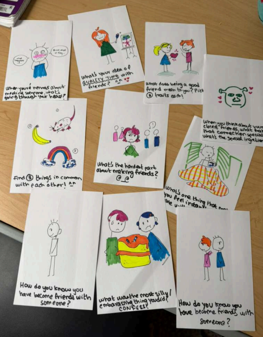
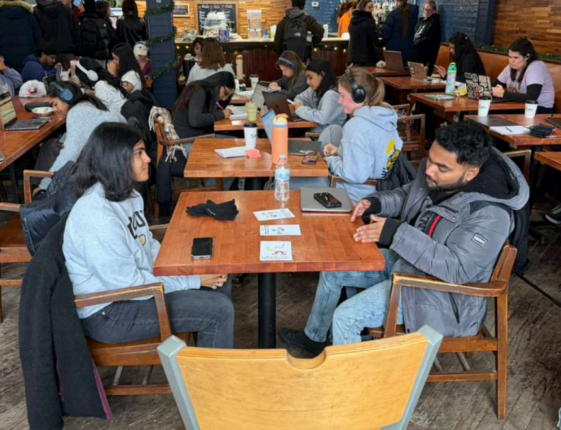
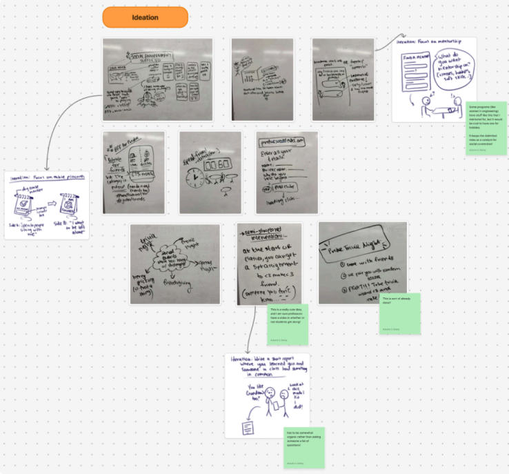

In today's digital age, we are simultaneously more connected and more alone than ever. College students, especially students from abroad, struggle to socialize in a culture they are acclimating to. Our goal was to design a solution to help foster new friendships between students on Purdue's main campus. Our methods included interviews, surveys, and physical prototyping. Our solution was a card game with personal questions of increasing depth with a whiteboard to indicate availability- this solution aims to be placed in public study spaces or in coffee shops.
Our final solution was a card game with questions that increase in depth and intimacy. Users can write something about themself on a prompted whiteboard (i.e. "My name is ___ and I study ___") to indicate availability to sit with other students that may be looking for a spot.

We created question prompts and drew goofy pictures to create our final prototype.

Evaluation was conducted at a local coffee shop known among students to have an exceptionally social atmosphere, rather than only a studious one.

We used Figma to organize ideas and iterations.